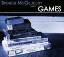
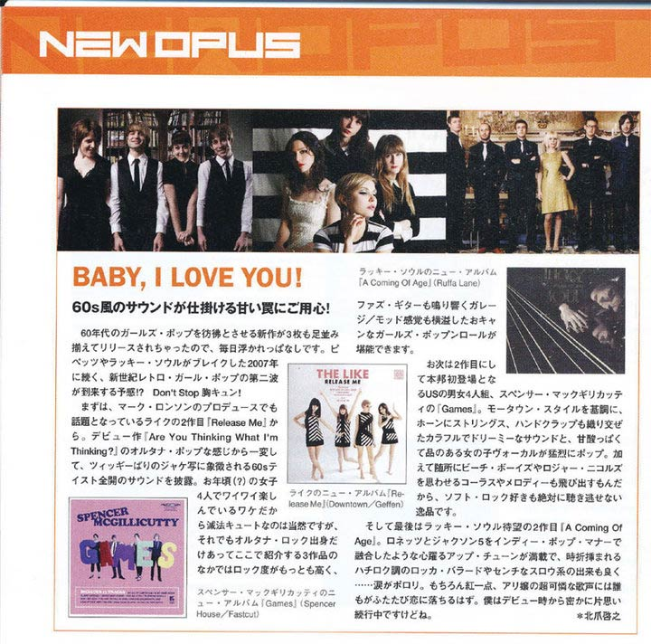
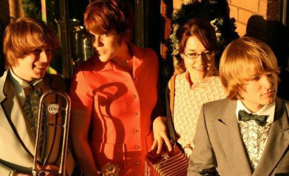
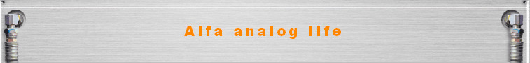

Buzz for Games
Baka Diary CD Purchase

Spencer McGillicutty
November 1, 2010
Here's a Google translation of the review [Japanese to English]:
Good times: 4
Genre: Pop Guitar - Power PopComments: refreshing and played the guitar and vibraphone in a beautiful bright tone echoed. How comfortable guitar pop. Fit well with the atmosphere of a pop song dressed in girls 60s. Chest tightens and sweetness of nostalgia, a sweet taste of unity and Paburugama.
Original link:http://indies-cdmania.cocolog-nifty.com/blog/2010/11/111goo-goo-doll.html
MetroMix Twin Cities
Twin Cities Roll Call: Spencer McGillicutty
Monday, August 13th, 2010
Minneapolis' own Spencer McGillicutty is making their way through the Twin Cities music scene, but they're big in Japan—no, seriously! To honor this rad path, they will be having a "Japanese edition" CD release party at the Triple Rock Social Club with special guests Kazyak and The Chord and the Fawn. The immaculate sock-hop-ready '60s bubblegum pop of local quartet Spencer McGillicutty has inexplicably not generated much buzz here in the Twin Cities as of yet, but they're big in Japan—no, seriously. Tonight's Triple Rock Social Club show is a "Japanese" album release party for the band's sophomore album, "Games," which is seeing release in the land of the rising sun courtesy of one of the country's hottest indie labels, Fastcut Records. Big hooks and a charmingly retro lyrical approach ("That girl kisses boys she doesn't even know!") power the albums 13 tracks of hand-clap friendly jangle-pop adorned with the kind of cute touches (dollops of xylophone, brassy blasts of baritone sax) rarely heard since Phil Spector's heyday. Modern music so steeped in nostalgia is rarely this delightfully irresistible. (8 p.m., $5, 18+)
Original Article is here (Click through to second page of the Roll Call)
Bounce Magazine - Tower Records Zine - Japan

Dagger Zine - Portland

Spencer McGillicutty/The School
GAMES/LOVELESS UNBELIEVER - (SPENCER HOUSE/ELEFANT/MINTY FRESH) - June 07, 2010
I recently bought the much-analyzed She and Him record on a whim. I like it. I like a lot, actually. It has a great mid- to late-60s AM radio feel and while celebrity singer Zooey Deschanel's voice is quite tricked up by heavy reverb, it has a nice natural matter-of-fact feel. And really amazing songs. However, the record ultimately makes me miss, Essex Green, who did the same thing a little better and a lot earlier. That's just a six-sentence way of saying that these two releases — Games, by Spencer McGillicutty and Loveless Unbeliever by School — cut the same path as She and Him. They're both boppy and light. They could have deftly provided music for Chip's senior prom on the television show My Three Sons. (That's a subgenre in search of a label.) Of the two groups, Spencer McGillicutty, of Minneapolis, has a little better songwriting chops — I hear a bit of Carole King in here, mixed with a healthy dose of the brilliant San Francisco band the Corner Laughers. And, gotta say it, there's a lot of Carpenters going on here. "An Act of Contrition," the opening track, brings the Karen hard, as does "Telephone Signals." Beyond that, Spencer McGillicutty rocks out a bit (the utterly catchy "It's Easy to Fall in Love" and "Secret Best Friend") and turns in a gem of a tune in the introspective and garage-band-like "Claire Carnaby." In all, the four-piece outfit (which had help from 18 contributors chiming in on the glockenspiel and French horn, among other instruments), has released a fine record. The School, from Wales, might be a bit more engaging of the two bands, perhaps an assemblage that's more radio-friendly thanks to the airy production of singer Liz Hunt's rangy melodies. The entire record is punchy, bouncy, happy, beautiful. "Is He Really Coming Home?" hearkens gorgeously to 1971 AM radio (the trumpets make it sound like the Brooklyn Bridge and Hunt sings like a cooler Melanie). Throughout, the piano and acoustic guitars mesh perfectly in a sort of folk-overeager pop mash up. The highlight: "I Love Everything," a simple 1-minor 6th-4-5 that's heartbreaking and gripping at the same time. While I still miss Essex Green, I hope these bands don't mind being in the same sentence as them. It's a compliment, one that I hope Deschanel will recognize as unadulterated praise as well.
Original Link: http://www.daggerzine.com/reviews_main_10.html
Chattanooga Times Free Press
By: Casey Phillips
Phillips: A bit of (musical) history repeated
While pointing out some of the artists I'd discovered during online forays a few weeks ago, I highlighted "In My Arms Again" by the Minneapolis-based pop band Spencer McGillicutty as one of my favorite new tracks. A couple of weeks later, Ryan Smith, the band's guitarist/vocalist e-mailed me to ask if I'd like a copy of their sophomore album, "Games," to get a broader picture of the band. Never one to turn down free schwag, I agreed. When it arrived, I was blown away by the band's brilliantly nouveau take on late '50s/early '60s doo-wop. Song after song features pristine vocal harmonies and infectiously orchestrated melodies that would have sounded at home at an "American Bandstand" sock hop. Also, co-lead vocalist Brittany Miller is scarily reminiscent of Carole King, whom I love. I'm admittedly a fan of brainless electro-pop artists such as Dragonette and Shiny Toy Guns, but I have more respect for bands such as Spencer McGillicutty, who avoid using technological crutches like Auto-Tune. Bands like that are musical anachronisms. They produce new music that, by dint of evolutionary momentum, should sound completely outmoded. Instead, they're so completely vested in paying homage that they manage to be simultaneously familiar and fresh, which is simultaneously obnoxious and illogical. Here are some other examples of musical anachronisms and the styles they revisit: The Carolina Chocolate Drops (antebellum Piedmont string-band music) The Darkness (stadium rock/glam metal) Christabel and The Jons (swing jazz) Bug GiRL (hard rock) Justin Townes Earle (Hank Williams-era country) Listening to these artists, you end up feeling a bit like Marty McFly, since these new releases would probably resonate with your parents or grandparents. Then again, they say fashion is cyclical, so why not music?
Original Link:http://timesfreepress.com/news/2010/may/14/a-bit-of-musical-history-repeated/
Leicester Bangs - UK
Spencer McGillicutty – Games (Spencer House Records) – March 24 2010
Well, this is fun. Spencer McGillicuty and his band of willing helpers are in awe of the girl groups of the ‘60s, Carole King, Beach Boys harmonies and killer tunes. A massive dose of exquisite pop music that should be ruling whatever charts it comes into contact with. Unfortunately, life’s unfair and you’re unlikely to stumble upon Spencer’s gang on a Top 40 radio station anytime soon. Instead you’re going to have to make a little effort and track down their debut record, Games. Honestly, you wont be sorry. Their old-school approach to pop music is charming and full of joyful respect for a style that went out of fashion sometime in the mid-‘60s. If any of the above piques your curiosity, or you’ve pleasing memories of the glory days of Mari Wilson, take a stroll over to their MySpace home and wallow long and hard in some of the most lovingly crafted pop you’ll have heard in a long time.
-Rob F.
Original Link: http://www.leicesterbangs.co.uk/mar10-24.html
FensePost: THE indie music blog

Spencer McGillicutty: Games [Album Review]
Spencer McGillicutty is a pop group with a retro edge. Their unquestionably complex, catchy melodies and co-ed vocals hint of the pop of the 1950s and ’60s. Games is their sophomore release and on it they go slightly acoustic with excellent tracks like “In My Arms Again” and “Secret Best Friend”. Like the pop music of half-a-century ago, this band creates music that is highly upbeat.
Spencer McGillicutty’s multi-faceted orchestration is tambourine-heavy and features jangly guitars, an occasional horn section. If you dig the carefree pop of the 60s, with a predilection toward girl-groups of that era, you’ll easily fall in love with “Hide And Seek” and, not surprisingly, “It’s Easy To Fall In Love”. Backed by orchestration provided slew of friends, this quartet has been dubbed The cutest band in the land, and their music is fits that statement perfectly.
Original Link: http://www.fensepost.com/main/2010/03/23/spencer-mcgillicutty-games-album-review/
Apple Crumble Records - Japan
SPENCER McGILLICUTTY
GAMES
a peaceful and harmonious chorus Woollahra woman hand clap one featuring the late, Motown"
2004年に結成されたアメリカMINNEAPOLIS出身のSpencer McGillicutty氏を中心とした5人組セカンド・アルバム。影響を受けた音楽はTHE BEATLES、THE BEACH BOYS、CAROLE KING、BURT BACHARACH、PHIL SPECTOR、モータウン、ELVIS COSTELLO、ベルセバ、THE PAPAS & THE PAPASなど。60年代ポップにインスパイアされたサウンドで、モータウン、THE VOLUNTARY BUTLER SCHEME、90年代後期のUSインディ・ポップを思わせる全11トラック：のどかなウーララ女性コーラス・ハーモニー＆後半からハンドクラップをフィーチャーした1、モータウン・リズム〜爽やか女性コーラス〜ハーモニカ〜ピアノ音の軽快ポップ2、シュビドゥビ女性コーラス＆オルガンが60年代してる3、ピアノ＆女性コーラス＆ホーンがフィーチャーされたモータウン・リズムの4、シックスティーズなサイケ・オルガン＆女性コーラスの5、ジャジー〜 AOR風味の心温まる70年代SSW調6、ピアノ＆鉄琴の音色に男女混合ボーカルのジャジー＆ラウンジーな7、高音ボーカルが印象的でホーン＆女性コーラスが加えられた8、ほのぼのとした大合唱＆ホーンでI’M FROM BARCELONAを思わせるのどかな9、ピアノ＆OLIVIA NEWTON-JOHNのように清らかな女性ボーカルで後半からホーン＆鐘の音色で壮大なバラード調10〜女性ボーカル＆クリスマスみたいな鈴の音色のしっとりとした11
Flake Records - Japan
Spencer McGillicutty
Games
Fashion which I do not think've got no work for years to listen!
ミネアポリスの4人組ポップバンドの完全自主制作盤をメンバーよりダイレクトイン！全てのポップファンにお勧め出来るノスタルジックポップの大傑作！ ジャケもバンド名も素敵なこのバンド！コツコツと活動を続けている男女混合4人組の自主制作2ndアルバム！これが自主制作とは思えないクオリティで素晴らしい！60年代レトロテイストを軸に据えつつもポップの才気的アレンジでTHE BEACH BOYS~JELLYFISHをも彷彿させるピュアポップ！RILO KILEYやベルセバ等とも比較されるように時代を超えるスタンダードなポップサウンドが詰まっています！モータウンなリズムとノスタルジックなメロディと男女混合のコーラスワークがとにかく最高！掘り出し物以外の何者でもないです！！CAMERA OBSUCURAのファンは是非！！！流行ものでは無いけども何年も聴ける作品かと思います！！M2の”IN MY ARMS AGAIN”とか超名曲っしょ！！！
http://www.flakerecords.com/rcminfo.php?CODE=12012
(rough English translation here - click the CD picture)
Even in the Future Nothing Works
Spencer McGillicutty "Games"
Spencer McGillicutty hails from Minneapolis, Minnesota. They play some very lovely pop songs that have well thought out arrangements. The band features a total of four primary members although the album features an army of 18 additional contributors. The vocals in the songs are very pleasant and in many of them they include the voices from most or all primary members of the band. The vocal styles are quite professional as they remind me a lot of Beach Boys, Elliott Smith, Ben Folds Five and Belle + Sebastian. With such a display, Spencer McGillicutty could be perceived as overachievers or perfectionists.
Instruments included on the album include: acoustic guitar, harmonica, electric guitar, piano, bass, keyboard, trumpet, trombone, tambourine, Hammond organ, glockenspiel, vibraphone, accordion, timpani, tubular bells, wind chimes, triangle, congas, cowbell, sleigh bells, xylophone, slide guitar, vibraslap, shakers, castanets, claves, wood block, drums, baritone saxophone, tenor saxophone, alto saxophone, viola, French horn, flute, oboe, clarinet.
http://eveninthefuture.blogspot.com/2009/11/spencer-mcgillicutty-games.html
Alfa Analog Life - Japan

Spencer McGillicutty の album GAMES は僕のところへ突然やってきた。
I ~, a really self-release? I can not believe it.
まず、表ジャケットでこれは好いに違いないと確信。 そして、三つ折りをパタパタッと開くと、きゃーきゃー、もう聴く前から絶対に好い音なのがわかる。ああもうなんて素敵なジャケットなの～。すぐにCDをデッキに。 鳴り出すまでのほんの数秒の間に裏ジャケを。IVYやFOWを初めて手にしたときに感じたトキメキの再来。僕の中のアメリカンポップに対する思いが爆発的盛り上がりを見せる。そもそも、まずバンド名が好いよね～っ！なんか懐かしい感じがしない？ ソロアーティストかと思うような名前だけど男女４人のミネアポリスのバンド。
Nicole Wilder, Brittany Millerの女性ボーカル２人とVo,acoustic gtr,harmonicaのRyan Ruff SmithにVoと他にいろいろたくさんの楽器担当のMitchell Johnsonの男性２人。
今回、このCDを送ってきてくれたのはMitchell。 フロントマンやマイスペをやってるのはRyanで、今やりとりはRyanとしてる。 Mitchellにもお礼言わなくっちゃ。
偶然の出会いなのか、必然の出会いなのか、Series Two Recordsのクリスが僕を紹介したんだって。 そっか、クリスのとこはCD-Rレーベルだから、リリースしたくてもこれはできないね～。 ということは、クリスのおかげなのか～、ありがとね、クリス！
と、いよいよ、音が流れ始める。
そこはもう、ポップな夢の世界でした。
カーペンターズに、ビーチボーイズ。
僕はリアルタイム世代じゃないからかな、かえってそういうものに影響を受けている人の音がものすごく懐かしくて。
BMX Banditsというより、スーパースター、ジョーさん的。
これこれ、これだよね～アメリカンポップ！
アメリカからこそこういう音はたくさん聴こえてきてほしいのに、なぜかピペッツとかばかりが日本じゃ取り上げられるヨネ～。流行りものじゃないとダメなところが日本市場らしいといえばそれまでだけど、こういう音はアメリカがなんだかんだ言っても、しっくりくるのだ。
ジェリーフィッシュ！
スワンダイブ！！
アレックス・チルトン！！
そうだよ、今までもこれからも僕らはアメリカンポップがずーっと大好きなんだーっ！
聴くだけでなんだか夢の世界に入っちゃうような、そんなアメリカンポップがずーっと好きなんだから。
ホーンが優しく包みこみつつ、バイオリンがそよ風みたいに漂って、ピアノがキラキラ。
コーラスワークが素敵すぎ！
ね～、ほんとにセルフリリースなの？
信じられないよ。
これがインディーの素晴らしさだよ。
http://plaza.rakuten.co.jp/hiroho/diary/200911250001/
(rough English translation here)
Power Pop Academy - Japan
SPENCER MCGILLICUTTY "Games"
Small nice too tightly sparkling pop!
2009(SELF) ￥1575(taxin) NEW ARRIVAL 10.04.09
キラキラの素敵過ぎるスモール・ポップがぎっしり！ミネアポリスの男女混合グループの傑作セカンドアルバム！50～60年代のクラシックなガールズポップをベースにともかく秀逸なコーラス、メロディーがしっかり中心に据えられ多彩な楽器、リズム、バックグランドがそれをさらに引き立てる！そりゃぁ飽きませんよ。彼らも大ファンのRilo Kileyみたいな女性voアメリカンポップやベルセバなどグラスゴー周辺のポップファンは間違いなく聴いておいてほしい作品。先日来日したCamera Obsucuraなんかが好きなら尚更。レトロなんだけど古臭くない、先端行ってるかといわれれば行ってなくもない、シュビドゥワップ。Series Two周辺の手作りポップ勢に通じる潔さ、そして同時にセルフリリースにもかかわらずトータルでこだわりぬかれたディレクションがポリシーをの高さを感じさせる。グレイト！！。POWERPOP ACADEMY限定のバッジ特典アリ！現在庫のみ
http://www.powerpopacademy.com/distro/2010/04/09-224159.html